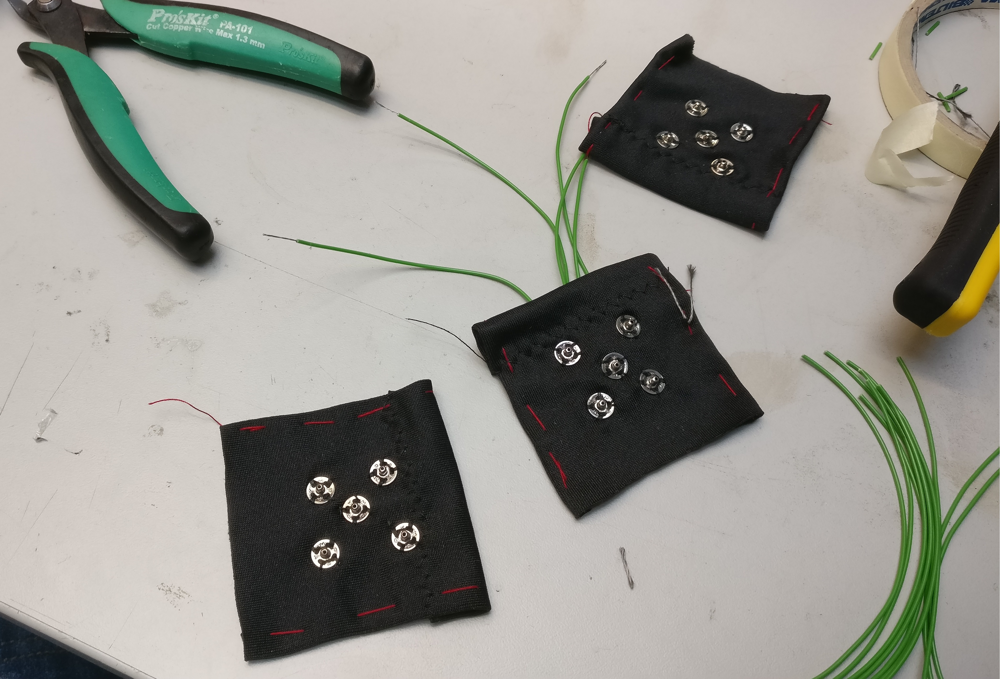

MCU (Main Processor Unit)
The main processor unit is integrated into the ESP32-WROOM module from Espressiff. The power of the MCU is far greater than of any AVR solution and the module even has a built-in WiFi antenna. The main PCB also houses the LDO (low-dropout regulator),
LiPo connector, battery protection circuit, charger, USB-serial converter and the USB-port, which are all needed for nominal performance. The size of the main PCB has been reduced to a remarkable 61x50mm (2.40x1.97 inch)
enclosure to ensure the best esthetics and comfort we can accomplish without compromises.
The LDO (or low-dropout regulator) is a device, that drops the voltage of the LiPo battery to the 3.3V required by the main circuit (the MCU and USB to serial converter). It offers low voltage drops and excellent efficiency
so that we can extend the operating time of the board with the LiPo pack.
The battery protection circuit (BQ29733DSER) ensures that the voltage of the LiPo battery doesn't fall below the dangerous 3.0V LiPo limit, after which one cell LiPo batteries tend to be irreversibly damaged. The battery protection circuit also
prevents the N-channel MOSFETs from delivering current to the board during a fault in one of the components or a short circuit on the board.
The charger (MCP73831) makes it possible to charge the LiPo battery via the USB port, while it's connected to the board. The circuit easily handles 5.0V, so it can be charged and powered from a computer's USB hub.
The MCP73831 is a programmable charger, which delivers 500mA to the battery pack. The charger communicates with the BQ29733DSER, so that it knows when the battery is being charged and activates the MOSFETs to allow current flow. The charger
also has a status indicator LED, which lights up when the battery is charged to its maximum.
The USB to Serial converter (CP2102-GM) makes it possible to program the ESP32 WROOM module.
The converter also sends out an indication voltage, which lets the computer know that a successful USB connection has been established with the slave device.
The MCU connects to external IMU sensors right off the board, with the help of snap fasteners, to ensure easy attachment and deattachment of the MCU itself from the smart clothing.
IMUs (Inertial Measurement Unit)
The inertial measurement units (or IMUs for short) are state of the art 9 DoF (Degrees of Freedom) sensors which make it possible to precisely map the movements of the user and deliver reliable information to the server. The IMUs used in this product are the MPU-9250s from Sparkfun and their 3D-printed enclosures keep the precious sensors safe and sound from external threats.
They also ensure low current consumption, with an average current draw of about 4mA during normal usage.
The IMUs have an acelerometer, a gyroscope and a magnetometer, all in one small package. Every gyroscopic sensor experiences drift over time, and this drift can be recalibrated and fixed with the data coming in from the accelerometer. However in such cases, in which the sensor (and the user) are moving, the accelerometer experiences 'vibrations' which make its data useless in recalibrating the gyros
when the subject is in movement. This problem is overcome with the help of a magnetometer, which gives us the exact orientation of the sensor at all times, so that recalibration is possible and the clothing can continue to deliver accurate sensory data for a prolonged period of time.
The Web Interface
The ESP32-WROOM first connects to the domain where the website is hosted (in this case Aalto University) using UDP (User Datagram Protocol) , then the data is processed on the server and sent to the web interface (in the browser) through the WebSocket protocol. The data is then used to control a 3D model of a torso on the web interface.

As the image above illustrates, the web interface is very dynamic and easy to use. Set up everything and the smart clothing is sending data directly to the interface.
Then the model replicates the exact movements of the user in real-time*.
The Clothing
The clothing uses an elastic and breathing material as the base of the wearable. It is comfortable to wear and tight enough that it provides a good base for the sensors. The MCU connects to the clothing itself with the help of snap fasteners, to which wires have been routed through the fabric of the clothing itself. The MCU is located on the backside of the clothing, which makes removing and using the MCU easy and convienient.
 The main clothing is a white hoodie with a zipper. The design of the clothing itself and the fact that it has a zipper, made it possible to easily sow the traces into the fabric itself.
Also it is easier to put on, when the user doesn't have to worry about damaging any connections of the clothing. The connections are secured with extra padding material,
so that it's possible to wear the clothing as a normal hoodie without the fear of any inner connections breaking or shorting out.
The main MCU board is located on the back-side of the user and the traces are routed conviniently through the back of the clothing to all the sensors. We made a case for the MCU and the LiPo battery, which are secured in a pouch,
so that the rough edges of the case don't disturb or hurt the user.
The main clothing is a white hoodie with a zipper. The design of the clothing itself and the fact that it has a zipper, made it possible to easily sow the traces into the fabric itself.
Also it is easier to put on, when the user doesn't have to worry about damaging any connections of the clothing. The connections are secured with extra padding material,
so that it's possible to wear the clothing as a normal hoodie without the fear of any inner connections breaking or shorting out.
The main MCU board is located on the back-side of the user and the traces are routed conviniently through the back of the clothing to all the sensors. We made a case for the MCU and the LiPo battery, which are secured in a pouch,
so that the rough edges of the case don't disturb or hurt the user.
The fabric itself also feels nice and the clothing is comfortable to wear, even for extended periods, which improves the usability of the smart clothing during the course of a day.
 The sensors connect to the clothing itself, using bands made from strethcing fabric and velcro and with the same snap fasteners as the MCU. This makes them modular and easily removable, so that the shirt can be machine-washed, without harming the sensitive electronics. This design also makes it possible to, for example only use two sensors to map the movements of one arm, if the user doesn't have 5 sensors in total. This offers flexability to the end user, if they don't want to invest in more sensors
The Cases
The clothing houses the MCU PCB as well as the IMUs in 3D printed enclosures. These were custom designed specifically in SketchUp, to ensure that the openings and sizes are correct and sleek for our applications.
All the cases in the prototype have been designed with attention to detail. Every lid snaps into place with a satisfying 'click' and stay attached even in the most demanding conditions.
The cases have gone through multiple iterations and they are now suited to serve the prototype's every need. The 3D-printed structure is durable but also surprisingly flexible and discreet enough to be hidden in the attachable bands.
The IMU cases as well are an integral part of the project, as they provide protection against wear and tear on the cables in the IMU pouches, which are attached to the clothing. They offer a lid to protect them from falling out and a wall, that prevents the user from sliding the lid off the case.
All the materials, including the 3D-models are available on the project's GitHub page.